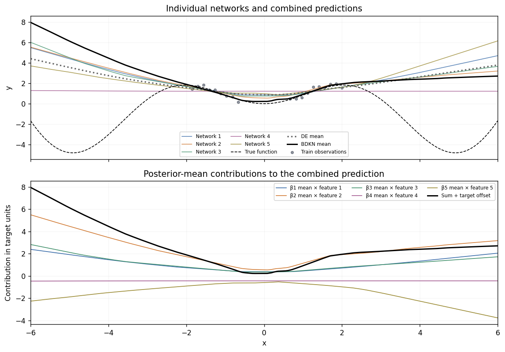
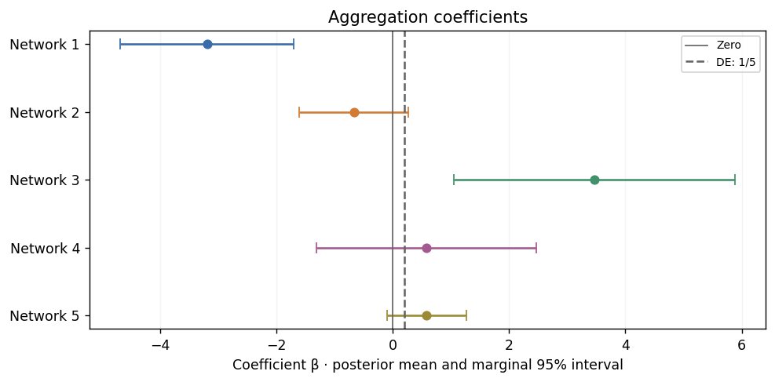
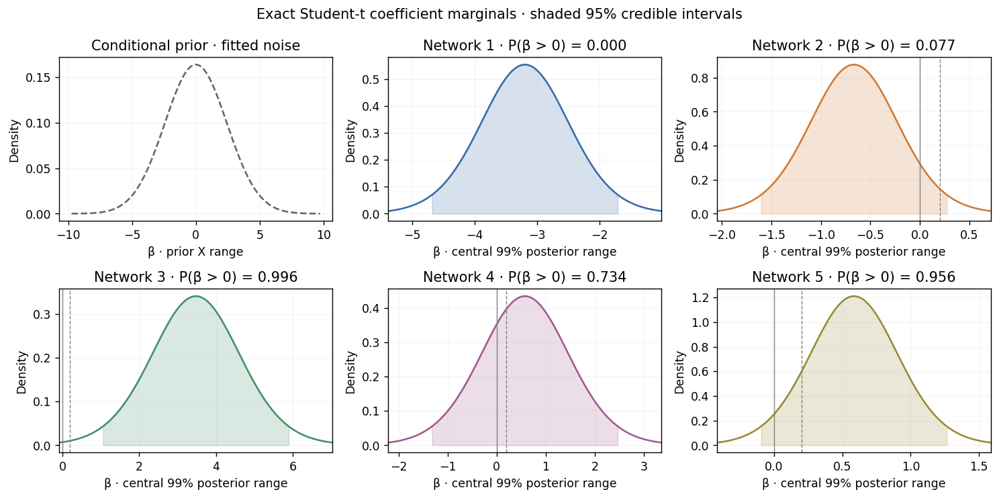
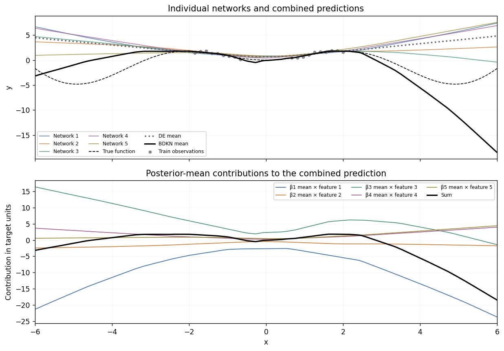
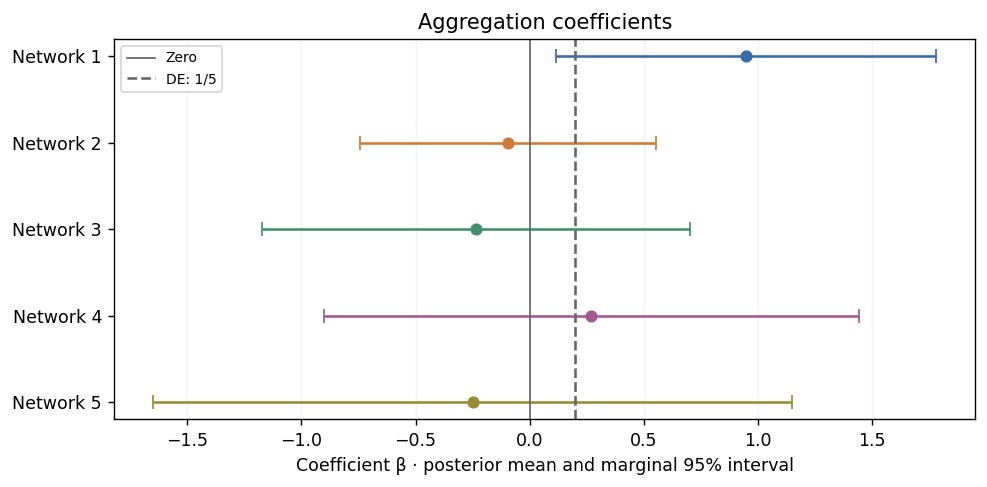
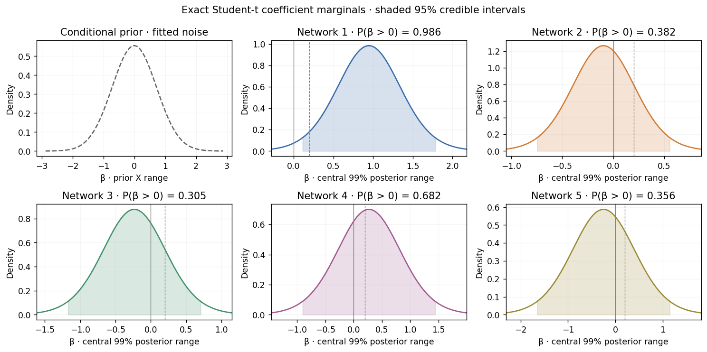
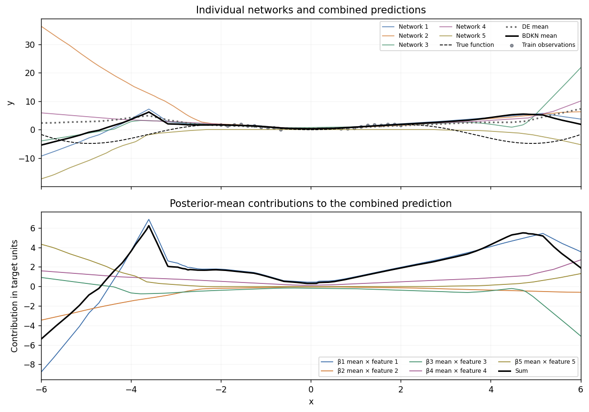
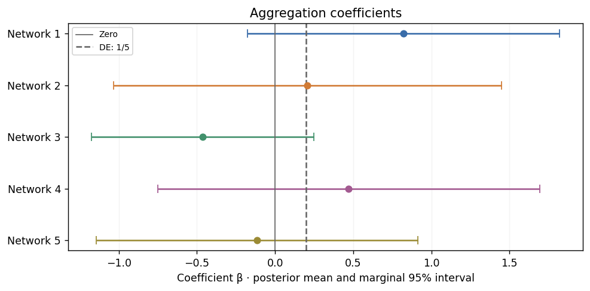
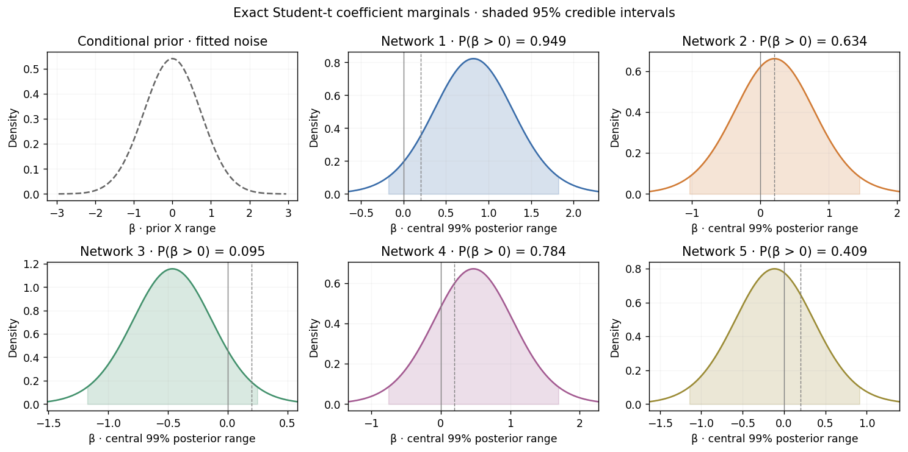
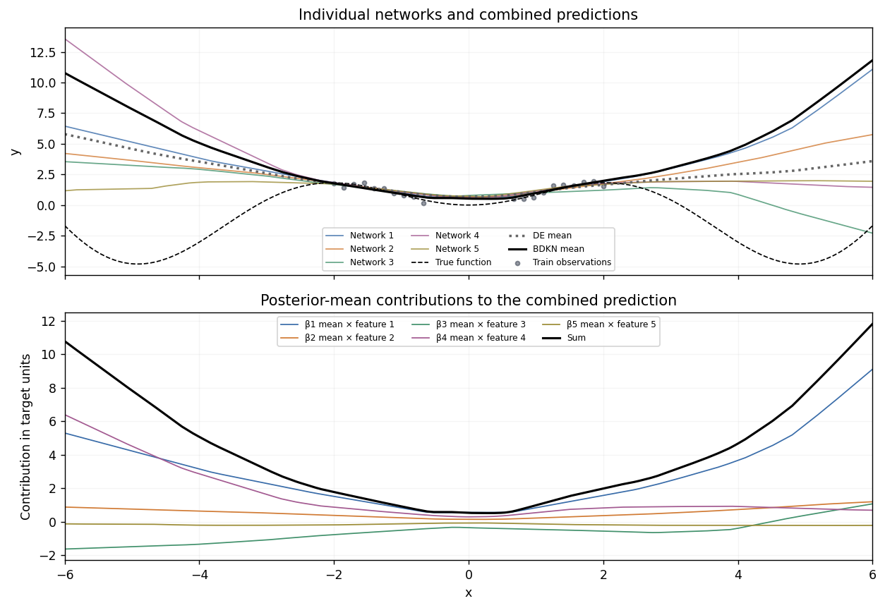

Regression comparison
Download resultsAggregation weights
Coefficients can be negative and need not sum to one. Intervals describe coefficient uncertainty; the dashed reference is DE’s fixed 1/H weight.
BDKN



Each density panel uses its own X range for readability; coefficient intervals above share a common axis. Prior reference conditions on fitted noise. Contribution shares use held-out inputs; test targets are used only for scoring.
| Network | β mean | 95% low | 95% high | P(β > 0) | Contribution share | Test RMSE | Test NLL |
|---|---|---|---|---|---|---|---|
| 1 | 0.43469 | -0.77729 | 1.64666 | 0.76846 | 0.16844 | 5.02000 | 1231149.62174 |
| 2 | 0.99304 | 0.21113 | 1.77496 | 0.99230 | 0.36008 | 4.77033 | 656706.74738 |
| 3 | 0.46964 | -0.86109 | 1.80038 | 0.76492 | 0.16942 | 4.81931 | 290912.11794 |
| 4 | -0.36685 | -1.10042 | 0.36672 | 0.15466 | 0.06824 | 3.27546 | 19.29033 |
| 5 | -0.61485 | -2.01420 | 0.78449 | 0.18515 | 0.23383 | 5.00970 | 18.78189 |
Functional repulsion · BDKN



Each density panel uses its own X range for readability; coefficient intervals above share a common axis. Prior reference conditions on fitted noise. Contribution shares use held-out inputs; test targets are used only for scoring.
| Network | β mean | 95% low | 95% high | P(β > 0) | Contribution share | Test RMSE | Test NLL |
|---|---|---|---|---|---|---|---|
| 1 | -3.19248 | -4.67834 | -1.70662 | 0.00011 | 0.47711 | 5.81368 | 3716362.01025 |
| 2 | -0.66632 | -1.60369 | 0.27104 | 0.07686 | 0.06740 | 4.26756 | 40829.14062 |
| 3 | 3.47307 | 1.05814 | 5.88801 | 0.99646 | 0.29654 | 3.98654 | 743710.10279 |
| 4 | 0.57514 | -1.31565 | 2.46593 | 0.73353 | 0.08739 | 5.80302 | 827287.47182 |
| 5 | 0.58470 | -0.09440 | 1.26381 | 0.95619 | 0.07157 | 5.12583 | 246227.49663 |
Weight repulsion · BDKN



Each density panel uses its own X range for readability; coefficient intervals above share a common axis. Prior reference conditions on fitted noise. Contribution shares use held-out inputs; test targets are used only for scoring.
| Network | β mean | 95% low | 95% high | P(β > 0) | Contribution share | Test RMSE | Test NLL |
|---|---|---|---|---|---|---|---|
| 1 | 0.94748 | 0.11350 | 1.78145 | 0.98602 | 0.51743 | 4.82378 | 22067.02845 |
| 2 | -0.09515 | -0.74478 | 0.55447 | 0.38156 | 0.11983 | 13.11490 | 30287.97261 |
| 3 | -0.23346 | -1.17112 | 0.70419 | 0.30460 | 0.11596 | 5.85294 | 957.69087 |
| 4 | 0.27015 | -0.90266 | 1.44296 | 0.68195 | 0.14264 | 5.59999 | 83399.50508 |
| 5 | -0.25038 | -1.64871 | 1.14794 | 0.35635 | 0.10414 | 3.52730 | 2.22942 |
First-order repulsion · BDKN



Each density panel uses its own X range for readability; coefficient intervals above share a common axis. Prior reference conditions on fitted noise. Contribution shares use held-out inputs; test targets are used only for scoring.
| Network | β mean | 95% low | 95% high | P(β > 0) | Contribution share | Test RMSE | Test NLL |
|---|---|---|---|---|---|---|---|
| 1 | 0.82203 | -0.17752 | 1.82158 | 0.94915 | 0.49196 | 6.33934 | 1591201.35501 |
| 2 | 0.20664 | -1.03466 | 1.44794 | 0.63399 | 0.09388 | 5.08162 | 255637.03264 |
| 3 | -0.46283 | -1.17361 | 0.24795 | 0.09475 | 0.12997 | 3.52425 | 8328.55856 |
| 4 | 0.47091 | -0.75158 | 1.69339 | 0.78444 | 0.25232 | 6.26136 | 7342946.50447 |
| 5 | -0.11502 | -1.14274 | 0.91270 | 0.40889 | 0.03187 | 3.62267 | 40.88326 |